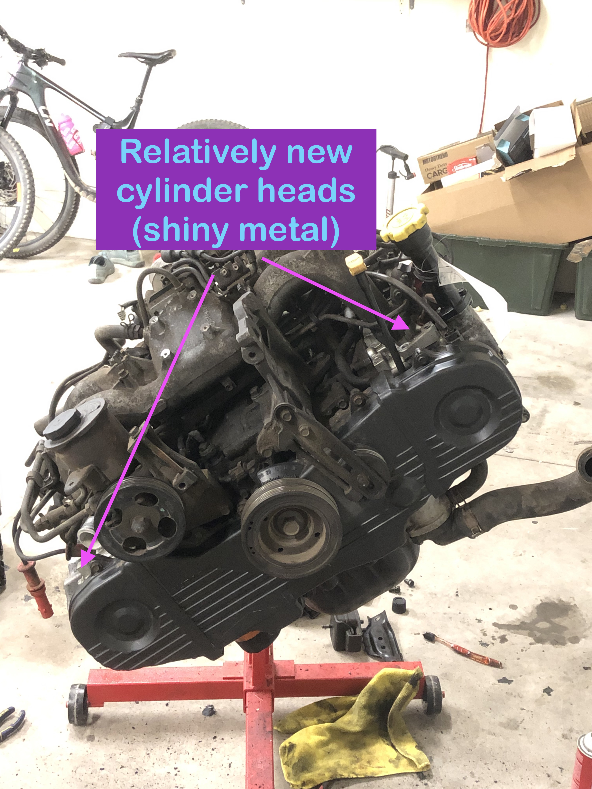

A bit of a backstory on this vehicle: I bought this car in June of 2022. The engine in it had rod knock. I wanted to go with a different option than the EJ25D that was in it, hence the search began. The car has been sitting for a year and a half now. Below is a list of items that I worked through to get this swap to work:
| Item To Complete | Time to Complete | Level of Completeness |
|---|---|---|
| New Plugs and Wires | 30 minutes | Complete |
| Longblock Cleaning | 2 hours | Complete |
| New Exhaust Manifold Studs | 30 minutes | Complete |
| Flex Plate to Crank | 30 minutes | Complete |
| Intake Manifold Removal | 45 minutes | Complete |
| Engine Secured in Car | 4 hours | Complete |
| Lower Bellhousing Studs | 4 hours | Complete |
| Intake Manifold Reintstallation | 1 hour | Complete |
| Flex Plate Bolts | 15 minutes | Complete |
| Power Steering Pump | 20 minutes | Complete |
| Alternator | 30 minutes | Complete |
| Drive Belt | 30 minutes | Complete |
| Custom Radiator Mounts | 2 hours | Complete |
| Radiator and Fan Installation | 1 hour | Complete |
| Starter Installation and Ground Point Fabrication | 2 hours | Complete |
| Knock Sensor Swap (cracked piezo) | 20 minutes | Complete |
| Fuel Line Management | 25 minutes | Complete |
| Air Filtration System | 1 hour | Not complete |
| Install Exhaust Manifold | 30 minutes | Complete |
| Vacuum/Evap System Routing | 2+ hours (I have no idea what goes where) | Partially complete |
| Oil, Transimission Fluid, Coolant, Gasoline | 1 hour | Complete |
| Interior Tasks: Glovebox, Seat mounting, Steering column covers, Diff-Lock wiring | 3+ hours | Partially complete |
| Battery Installation | 5 minutes | Complete |

Engine bay before starting work, went through and cleaned it with a fellow subaru owner over the summer.
So, this is actually a nice straight forward swap (unlike a lot of swaps out there). There are basically no wiring hurdles that need to be overcome to get this to work. That is if you get the right engine, and accompanying parts.
Introduction
Got the engine. It has an unknown number of miles, at least that is what the scrap yard I got it from said. So that is definitely a little worrisome. This particular engine does have new cylinder heads though. These heads have hydraulic lifters, instead of solid style lifters. Compression is apparently around 160psi per cylinder; turning the engine over by hand it certainly feels that way. The engine was coated in a thick, nearly immpenetrable layer of oil and dust. It didn't really help that I was used a primitive way of removing it; dabs of degreaser, plenty of rags, and the occassional sweet, sweet sip of la-croix. Below is a picture of the beauty:
This is the engine that I going back in the car, single overhead cam instead of dual overhead cam.
Tune-up Section
First things first was finding all the tune up parts for this thing: spark plugs, spark plug wires, filters, belts, etc... These parts aren't really that expensive by themselves; once you start purchasing a lot of them that's when it becomes expensive. In addition to general tune up parts I also ended up getting some specialty parts; Most notably a new radiator and an exhaust manifold. Why a radiator you may ask? Well, I messed up the old radiator pretty good getting it out of the car, severely bending some of the cooling fins. Hopefully I can come up with a better mounting solution for the radiator than chicken wire, which is what I purchased the car with. I ended up putting most of the tune up parts on with the engine out of the car for easier access to everything. Once this was done I could actually move onto slapping the engine in the car. I also ended up putting the old EJ25 flex plate on the engine, so there wouldn't be any issues getting the flex plate to torque converter bolts to align.
Engine in the Car
Getting the engine in the car wasn't as easy as I thought it would be, I had some issues aligning the engine with the transmission mainly due to the fact that I didn't have long enough chains. If I had longer chains then I would have been able to mount the leveler parallel crank pulley to flex plate, rather than parallel passenger to driver valve cover. I had to take off the intake manifold and secure the chains to intake manifold mounting points. There are 8 of these points, they are quite strong, and they are out on the edges of the engine giving you really better control of where you are directing the engine. Initially I used a neandrathal way of hoisting the engine, two attachment points (one on the ac compressor bracket and the other near the bulkhead engine connectors. These points on the engine are strong but they also do not balance the weight that well.
In the end I had to take the engine in and out of the car 4 times. This is just the nature of the game sometimes; Especially considering my current experience level with cars. Sure I've worked on them, but I only just started working on them seriously ~2 years ago. A couple of times the engine was spun in the wrong direction, another the engine mounting studs were not lining up with their slots, and the remaining two times the engine was obnoxiously tipping way too far forward... :| . Eventually though with enough patience I was able to get it to a point where I could thread on two of the four bellhousing bolts. The bolts were only threaded on when the engine and transmission were ~.5 inches away from each other to prevent any unnecessary tangential forces.
Putting the intake manifold back on the car wasn't too terrible. I was mainly just worried about not plugging something in, or failing to reconnect a disconnected vacuum line. Most of this stuff is located underneath the manifold and is quite difficult to access once installed.
Engine Mounts
Here you can use either the EJ25 or EJ22 engine mounts, they are identical to one another. Once the engine was actually in the car, getting the engine mounts in place was a little difficult. I ended up taking them off to get the engine to bolt up with the transmission initially, and then it ended up being extremely difficult to actually get them bolted to the engine. There was just not a whole lot of space to get them on really ~3 inches, and this was quite similar to the actual height of the engine mounts to begin with. If I was to do this again I would definitely leave the engine mounts on, and manipulate the transmission to get the mount studs to line up correctly.
Bellhousing Studs
The bottom two studs were a bear to get in. On the passenger side of the car I was able to modify the stud a little (I just ended up grinding down the stud a little to get it to fit past the axle). This wasn't too bad and ended up working just fine. On the driver's side, though, I ended up removing the inner part of the axle from the transmission, and this gave me plenty of access to get the stud to slide in. This took a long time to accomplish however, just due to the fact that the strut to knuckle bolts were extremely tight/rusty and took me multiple attempts and WD40 spray dows to break loose. Additionally, on the driver's side I managed to get my roll pin punch stuck in the transmission axle spline. It ended up being really difficult to extract, and took me the better part of an hour to get it out. Once this was out though it was easy to get the stud in, and everything put back together.
Radiator Mounting Solution
Ok, so the car did not come with the radiator mounting bracket. All that was holding the radiator in was some chicken wire. I made two brackets one for each side of the radiator. They fit alright, but one side is bent a little more than the other to get the threads to line up correctly. If the radiator doesn't contact the drive belt at all then I'll call that a success. It also took some time to build these as I do not own the most advanced tools. I made sure to paint them for rust prevention. They're definitely not the prettiest and we will see if they hold up or not.